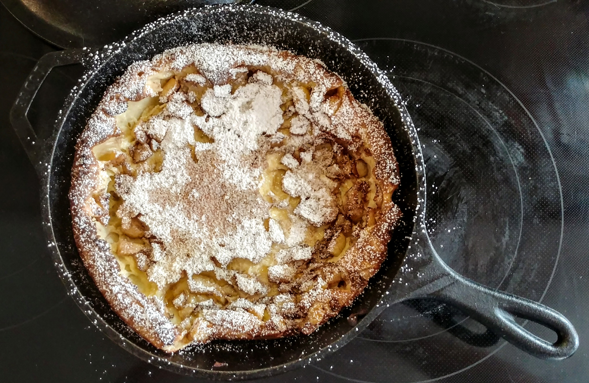

Back To Home
Lasagna

"I've always been fascinated by how many different breakfast foods you can create using just milk, eggs, and flour; and this is one of the more interesting examples. Especially considering the unusual, and borderline disturbing name. Sometimes called German pancakes, these have very little to do with Germany, and nothing to do with the Dutch. Apparently they were invented by German immigrants who were referred to as Dutch." - Odin.
Receipt
Let's make the best breakfast you've ever tried.
Ingredients
- ⅔ cup milk, room temperature
- ½ cup packed all-purpose flour
- 3 large eggs, room temperature
- ¼ teaspoon vanilla extract
- ¼ teaspoon salt
- 3 tablespoons clarified butter
- 1 tablespoon butter
- ½ Meyer lemon, juiced
- 1 tablespoon confectioners' sugar, or to taste
Directions
- Preheat oven to 425 degrees F (220 degrees C).
- Blend milk, flour, eggs, vanilla extract, and salt together in a blender until batter is smooth.
- Melt clarified butter in a 10-inch cast-iron skillet over high heat until bubbling; pour batter into the center of the skillet.
- Bake in the preheated oven until puffed and golden, 20 to 25 minutes. Brush with 1 tablespoon butter, drizzle lemon juice over the top, and dust with confectioners' sugar.